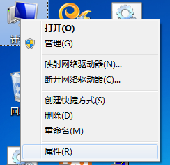
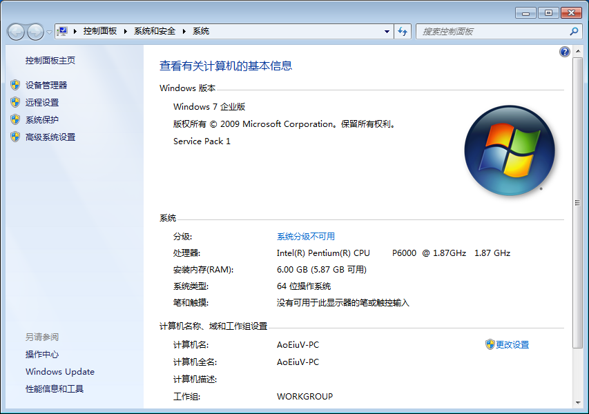
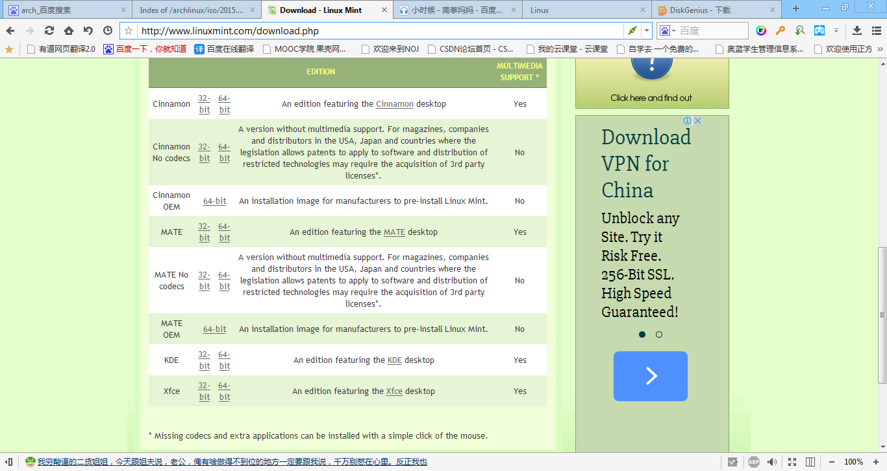
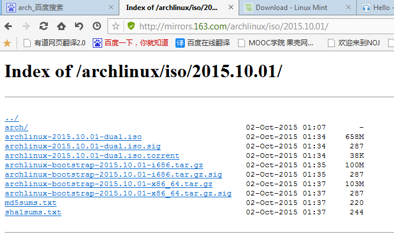
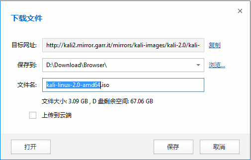
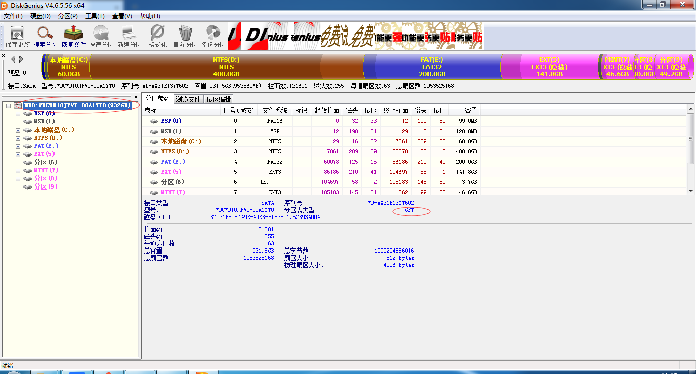
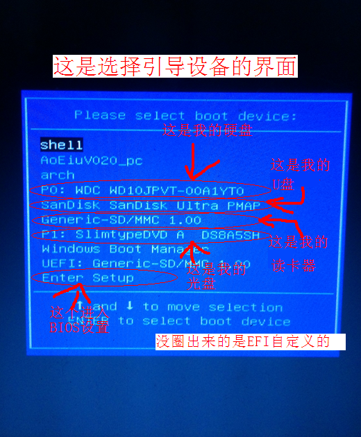
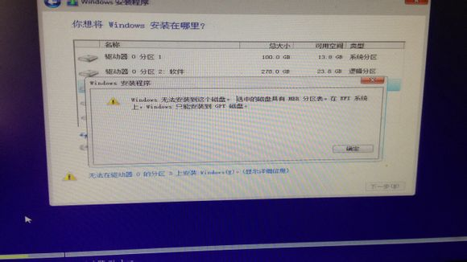
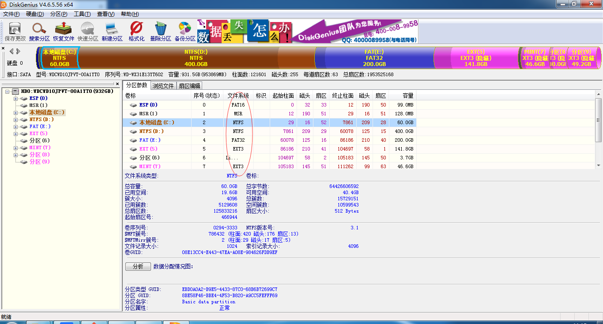

在Windows上看，首先通过“我的电脑”右键属性，看看自己的“系统类型”，现在的电脑的cpu基本都是支持x64的了。


如果有老电脑不支持64位，那么就不能安装64位的windows，同样不能安装64位的Linux，所以如果要安装Linux，那么下载Linux系统镜像时就要注意下载的是64位还是32位，通常，下载的iso镜像文件名都能体现这一点，比如64位通常写有类似于"x86_64"，"64-bit"，"amd64"，32位的通常写有"x86"，"32-bit"，"i386"，"i486"，"i586"，"i686"，总之很好区分，但不能忽略。



然后是分区表有关的，这里用的是Diskgenius，用这软件能看到硬盘详细的信息，点一下硬盘就能看到右边的分区表类型，我的是GPT，还有种常见的是MBR。

分区表类型是和启动方式相关的，BIOS引导只能用于MBR分区表，EFI引导只能用于GPT分区表，如果主板不支持EFI，那么自然只能用BIOS+MBR，如果主板支持EFI，开机选引导时就要注意，到底是哪种引导。

要是用BIOS引导安装系统在GPT分区表的硬盘上，或EFI引导的在MBR分区表上安装系统，都会出现无法预料的问题。

文件系统，还是Diskgenius，中间一列就是每个分区的文件系统，

常见的文件系统有，FAT，NTFS，exFAT，EXT，前三者都是微软发明的，EXT是为Linux发明的，FAT系列以FAT32为例，FAT32无法存放单个文件大于4G的，后三者都可以，而且FAT性能不行，所以已经基本被NTFS取代。
但是上图可以看出，我的电脑上有个FAT16的，这是因为EFI只能从FAT加载启动项，至于exFAT，这通常是u盘用的，因为NTFS会详细记录读写操作，所以要更频繁的读写，对于u盘来说，频繁的读写是很伤芯片的，但是FAT32又不能放大于4G的单个文件，所以有了exFAT，专门给u盘使用。
EXT系列的是Linux上最常用的，想在windows上读写不容易，最新的EXT是EXT4，但是我至今没找到能在windows上读EXT4的软件，而Diskgenius就可以读EXT3，所以我一般就是用EXT3安装Linux。
而前三者对于Linux来说，FAT32也是普遍支持的文件系统，但是在Linux上通常称为VFAT，NTFS，Linux内核不支持NTFS的读写，但是有个叫“NTFS-3G”的常用软件可以实现NTFS的读写，exFAT，和NTFS一样，Linux并不支持，有个叫“exfat-utils”的安装后就能读写exFAT。
这里都是理论，但是要看，要懂，到这里，同学们应该要懂，32位，64位，MBR，GPT，BIOS引导，EFI引导，这些词的含义，能判断出自己电脑符合哪些词，还有知道下文件系统大概是什么，以及常见的文件系统，这也就够的，